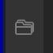
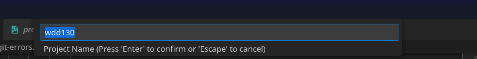

Users with multiple coding projects/classes
It is recommended that if you are doing multiple coding projects at a time and each has its own folder/directory structure, you install an extension called Project Manager
Go to extensions
Search for Project Manager
Click Install.
Once installed open one project folder in VSCode
Click on the Project Manager icon in the icons on the left or right of the editor
You should see a blue button that states: Project Manager: Save Project - Click that button and you will be prompted for a name at the top center of the screen. The default name is the folder name.
You will be prompted to give the project a name
That will then add that project name to the Project Manager list of projects.
Open the second project folder in its own workspace.
Click the Save icon in the Project Manager folder icon area.
Give your project a name and hit enter. This will add it to the list.
If you click the edit icon, it will open the JSON file that lists your projects. The format is quite easy to follow. The rule is that each project must be enclosed with { } and must have a comma between the project section.
- Name is the name of the project
- Rootpath is the path to the project.
- Paths is not used at this time
- Tags is a way to categorize the type of project for sorting. This list is up to the person
- Enabled is if the project will display or not in the list of projects. This is a way to only show projects you are currently working on.
This is the format of the JSON File
{
"name": "WDD-130",
"rootPath": "/var/www/html/school/wdd130",
"paths": [],
"tags": ["School", "WDD-130"],
"enabled": true
},